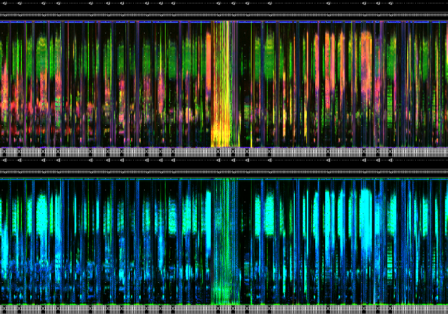

Chapter 2 Data pre-processing
2.1 Acoustic data basics
The first step after an ARU is retrieved from the field is to promptly download and secure the data to create a redundant backup. Having redundant backups not only protects against data loss but also ensures business continuity and minimizes downtime in the event of a system failure or natural disaster. Furthermore, in case there is an issue with the SD card copy during the quality control process, having a redundant backup ensures that a copy of the data can be restored.
In wildRtrax and WildTrax, there are a few essential components and standards that are required in order for the data to be utilized within this context:
- Location: The physical, geographic place at which environmental sensors were deployed and/or biological data was collected on the landscape. This is how you would associate spatial coordinates to the raw audio data.
- Date and time: The temporal component of the audio recording - when the recording took place. Many time formats are possible but the recommended standard is
YYYY-MM-DD - Sample rate: The frequency at which audio waveforms are captured during analog-to-digital conversion in the environment. Digital audio uses pulse-code modulation and digital signals for sound reproduction, allowing signals to be stored, retrieved and transmitted without any loss of quality. Sampling rates of 44.1 kHz, 48 kHz, or 96 kHz are commonly used for capturing audio within the 20–20,000 Hz range. Higher sampling rates (>96 kHz) are employed to capture ultrasonic species as needed.

A recording is the raw media or audio file. The following data types are supported within wildRtrax package. They are implicitly related to how each model and type of ARU records data. See Wildlife Acoustics, Frontier BAR-LT and Audio Moth for examples to learn more.
- wac are proprietary, lossless compressed file formats developed by Wildlife Acoustics
- wav is the standard, ubiquitous uncompressed audio file format
- mp3 a lossy compressed audio file format; works by reducing the accuracy of certain sound components, and eliminating others
- flac is a lossless compressed audio file format
Did you know?: When data are uploaded to WildTrax, the audio is converted and stored as flac.
Some additional file name recommendations include:
- Omitting leading zeros for numeric delimited content, e.g. use
OG-1-3-5instead ofOG-01-003-05, unless they serve a identification purpose, e.g.3-0-A12where-0-indicates the an absence of a treatment - Metadata are also supported for *.dump, .txt, .csv, .fls, and .SM4S files
- Delimiters such as “-”, “_”, “@” are supported. Spaces and slashes “/” “” in location names are not supported “_000” suffixes from Wildlife Acoustics Kaleidoscope output (wac -> wav conversion) are supported
Audio files need to contain both spatial and temporal information which is the minimum required in order to upload media to WildTrax, e.g. ABMI-538-SW_20220506_050000, where ABMI-538-SW is the location and 20220506_050000 is the timestamp. Both these pieces of information can tell you when and where the recording took place.
2.2 Acoustic data pre-processing
2.2.1 Reading, filtering and selecting audio recordings
Note, if you’re not an R user you can stop here and upload all of your recordings directly an organization on WildTrax. WildTrax however does not contain all the necessary data quality control measures to uptake data that are included in wildRtrax
- Go to the organization on WildTrax
- Go to Manage > Upload Recordings to Organization
- Follow the steps in WildTrax to finalize data upload
The first step in data pre-processing is to determine what files exist. wt_audio_scanner is the function that provides the basis for the rest of the data pre-processing steps. The function recursively scans directories of audio data and returns standard metadata such as the file path, file name, file size, date, time, location name, that will later be used in WildTrax.
files <- wt_audio_scanner(path = "/volumes/budata/abmi/aru/abmi-eh/2022/v1/228/228-NE", file_type = "wav", extra_cols = F)# A tibble: 6 × 11
file_path size_Mb unsafe file_…¹ locat…² recording_date_time file_…³ julian year gps_e…⁴
<chr> <dbl> <chr> <chr> <chr> <dttm> <chr> <dbl> <dbl> <lgl>
1 /volumes/b… 3.51 Safe 228-NE… 228-NE 2021-11-21 12:35:49 wav 325 2021 NA
2 /volumes/b… 106. Safe 228-NE… 228-NE 2022-03-01 00:00:00 wav 60 2022 NA
3 /volumes/b… 31.8 Safe 228-NE… 228-NE 2022-03-01 02:00:00 wav 60 2022 NA
4 /volumes/b… 106. Safe 228-NE… 228-NE 2022-03-01 08:59:00 wav 60 2022 NA
5 /volumes/b… 31.8 Safe 228-NE… 228-NE 2022-03-01 10:29:00 wav 60 2022 NA
6 /volumes/b… 31.8 Safe 228-NE… 228-NE 2022-03-01 12:00:00 wav 60 2022 NA
# … with 1 more variable: time_index <int>, and abbreviated variable names ¹file_name,
# ²location, ³file_type, ⁴gps_enabledYou can choose extra_cols = T you’ll be supplied with additional columns that can be used to help select recordings, specifically sample rate, length (seconds) and number of channels.
files_extra <- wt_audio_scanner(path = "/volumes/budata/abmi/aru/abmi-eh/2022/v1/228/228-NE", file_type = "wav", extra_cols = T)# A tibble: 6 × 14
file_path size_Mb file_…¹ locat…² recording_date_time file_…³ julian year gps_e…⁴ time_…⁵
<chr> <dbl> <chr> <chr> <dttm> <chr> <dbl> <dbl> <lgl> <int>
1 /volumes/… 3.51 228-NE… 228-NE 2021-11-21 12:35:49 wav 325 2021 NA 1
2 /volumes/… 106. 228-NE… 228-NE 2022-03-01 00:00:00 wav 60 2022 NA 1
3 /volumes/… 31.8 228-NE… 228-NE 2022-03-01 02:00:00 wav 60 2022 NA 2
4 /volumes/… 106. 228-NE… 228-NE 2022-03-01 08:59:00 wav 60 2022 NA 3
5 /volumes/… 31.8 228-NE… 228-NE 2022-03-01 10:29:00 wav 60 2022 NA 4
6 /volumes/… 31.8 228-NE… 228-NE 2022-03-01 12:00:00 wav 60 2022 NA 5
# … with 4 more variables: length_seconds <dbl>, sample_rate <dbl>, n_channels <dbl>,
# unsafe <chr>, and abbreviated variable names ¹file_name, ²location, ³file_type,
# ⁴gps_enabled, ⁵time_indexIt’s possible that the recordings you have are longer than the maximum length WildTrax can currently import (1800 seconds or 320MB). In this case, you can use wt_chop to create intervals of recordings
wt_chop will create modulo recordings as needed; this refers to the remaining portion of the recording that is left over after it has been divided into equal intervals of the chosen duration. For example, if a recording is 120 seconds long and it is split into 50-second intervals, the modulo recording would be the final 20 seconds (e.g. 50 - 50 - 20). However, if the chosen interval duration is a factor of the total duration of the recording, there will be no modulo recording. For example, if a 120-second recording is divided into 60-second intervals, there will be no modulo recording since 60 is a factor of 120.
At this stage, you can filter recordings from the wt_audio_scanner tibble output in order to select the files you’re interested in. Here’s an example of the ABMI’s Stratified Sampling Design for the Ecosystem Health Monitoring program that’s used to pick recordings across a breadth of dates and times in order to maximize the species inventory collected at a location.
> abmi_blocks <- as_tibble(data.frame(julian = 90:210) %>%
+ crossing(time_index = 1:4) %>%
+ mutate(blocks = case_when(julian %in% 90:139 & time_index == 1 ~ 9, # Midnights during the spring for owls
+ julian %in% 140:159 & time_index == 1 ~ 10, # Midnights for amphibians, nocturnal breeders
+ julian %in% 160:179 & time_index == 1 ~ 11, # Midnights for amphibians, nocturnal breeders
+ julian %in% 180:210 & time_index == 1 ~ 12, # Midnights for amphibians, nocturnal breeders
+ julian %in% 90:104 & time_index == 3 ~ 1, # Dawn in winter-spring for residents
+ julian %in% 105:119 & time_index == 4 ~ 2, # Post-dawn in spring for residents, early arrivers
+ julian %in% 120:139 & time_index == 3 ~ 3, # Dawn for early arrivers
+ julian %in% 140:149 & time_index == 3 ~ 4, # Dawn for breeding bird chorus
+ julian %in% 150:159 & time_index == 4 ~ 5, # Post-dawn breeding season
+ julian %in% 160:169 & time_index == 3 ~ 6, # Dawn for breeding bird chorus
+ julian %in% 170:179 & time_index == 4 ~ 7, # Post-dawn breeding season
+ julian %in% 180:210 & time_index == 4 ~ 8, # Post-dawn late breeding season
+ TRUE ~ NA_real_),
+ recs = case_when(blocks %in% c(4:7) ~ 180,
+ TRUE ~ 60)))
>
> head(abmi_blocks)# A tibble: 6 × 4
julian time_index blocks recs
<int> <int> <dbl> <dbl>
1 90 1 9 60
2 90 2 NA 60
3 90 3 1 60
4 90 4 NA 60
5 91 1 9 60
6 91 2 NA 60The Before-After Dose-Response program is another example of a sampling design. Here, we select four recordings near dawn and one recording at dusk for each location between Julian date 140 and 210, for a total of 15 audio minutes. Again, this approach allows users to maximize species diversity while accounting for processing effort.
b <- wt_audio_scanner(path = "../2-0-A25", file_type = "wav", extra_cols = F)
# A list of locations donwload from My Organizations > Manage > Download Locations
locs <- read_csv("../locations.csv")
bz <- b %>%
select(file_name:year) %>%
inner_join(., locs, by = c("location")) %>%
# Ensure time zone is correct
mutate(recording_date_time = force_tz(recording_date_time, "US/Mountain")) %>%
rowwise() %>%
# Get sun angle, 6 degrees before dawn defines civil twilight period
mutate(angle = pull(suncalc::getSunlightPosition(date = recording_date_time, lat = latitude, lon = longitude, keep = c("altitude"))) * (180/pi)) %>%
ungroup() %>%
filter(between(angle,-6,6),
between(julian,140,210)) %>%
mutate(hour = hour(recording_date_time))
# Sample on dusk recording
bz1 <- bz %>% filter(hour %in% c(20:22)) %>%
sample_n(1, replace = F)
# And four dawn recordings
bz2 <- bz %>% filter(hour %in% c(4:7)) %>%
sample_n(4, replace = F)
# Bind the data together
bzz <- bind_rows(bz1, bz2)# A tibble: 5 × 17
file_name locat…¹ recording_date_time file_…² julian year latit…³ longi…⁴ eleva…⁵ buffe…⁶
<chr> <chr> <dttm> <chr> <dbl> <dbl> <dbl> <dbl> <lgl> <dbl>
1 2-0-A25_2… 2-0-A25 2021-06-26 21:20:00 wav 177 2021 54.9 -112. NA NA
2 2-0-A25_2… 2-0-A25 2021-06-29 05:38:00 wav 180 2021 54.9 -112. NA NA
3 2-0-A25_2… 2-0-A25 2021-06-27 05:37:00 wav 178 2021 54.9 -112. NA NA
4 2-0-A25_2… 2-0-A25 2021-06-26 05:36:00 wav 177 2021 54.9 -112. NA NA
5 2-0-A25_2… 2-0-A25 2021-06-30 05:39:00 wav 181 2021 54.9 -112. NA NA
# … with 7 more variables: isHidden <chr>, trueCoordinates <lgl>, comments <chr>,
# internal_wildtrax_id <dbl>, internal_update_ts <dttm>, angle <dbl>, hour <int>, and
# abbreviated variable names ¹location, ²file_type, ³latitude, ⁴longitude,
# ⁵elevationMeters, ⁶bufferRadiusMetersAnother example of selecting files may be geographic. Here’s an example with selecting recordings with Bird Conservation Regions.
library(tidyverse)
library(sf)
# Clean up the locations
locs_next <- locs %>%
filter(!is.na(latitude), !is.na(longitude)) %>%
select(location, latitude, longitude) %>%
distinct() %>%
mutate(index = row_number())
# Create a simple features object
locsset <- st_as_sf(locs_next %>% select(location, latitude, longitude) %>% distinct(), coords = c("longitude","latitude"))
locsset <- st_make_valid(locsset)
locsset <- st_set_crs(locsset, 4269)
# Load a shapefile of Terrestrial BCRs
bcrs <- read_sf("../BCR_Terrestrial.shp")
# Filter to just Alberta
bcrs <- st_make_valid(bcrs) %>% filter(PROVINCE_S == "ALBERTA")
# Intersect the location with the BCRs
out <- st_intersection(locsset, bcrs) %>%
as_tibble()
# Join it to the original tibble
locss <- locs %>%
inner_join(., out, by = c("location" = "location"))# A tibble: 5,124 × 2
location BCRNAME
<chr> <chr>
1 1-NE TAIGA SHIELD AND HUDSON PLAINS
2 1-NW TAIGA SHIELD AND HUDSON PLAINS
3 1-SE TAIGA SHIELD AND HUDSON PLAINS
4 1-SW TAIGA SHIELD AND HUDSON PLAINS
5 2-NE BOREAL TAIGA PLAINS
6 2-NW BOREAL TAIGA PLAINS
7 2-SE BOREAL TAIGA PLAINS
8 2-SW BOREAL TAIGA PLAINS
9 3-NE BOREAL TAIGA PLAINS
10 3-NW BOREAL TAIGA PLAINS
# … with 5,114 more rowsggplot(bcrs) +
coord_sf(crs = 4269) +
geom_sf(aes(fill = BCRNAME)) +
geom_sf(locsset, mapping = aes()) +
theme_bw() +
theme(legend.position = "none") +
scale_fill_viridis_d()
In the end, how recordings are selected is completely dependent on your study design.
2.2.2 Using acoustic indices and LDFCs

Acoustic indices and long-duration false-colour (LDFC) spectrograms are two tools used in the analysis of acoustic data developed by the Towsey lab at QUT. Acoustic indices are numerical measurements that quantify various aspects of sound using different measurements that reflect the soundscpe. They are used to identify and track patterns of vocal activity over time, generate soundscape and monitor ecosystem-level patterns and changes. Some commonly known acoustic indices include the Acoustic Complexity Index (ACI), which measures the diversity of sound frequencies and amplitudes, and the Acoustic Diversity Index (ADI), which measures the number and relative abundance of different vocalizations. Long-duration false-color spectrograms are visual representations of acoustic data using index values rather than spectral generation in order to provide detailed views of sound patterns over long periods of time. The use of false-colours allows for easier interpretation of the spectrogram, as different colors can be used to represent different types of sounds. These unique spectrograms are particularly useful in studies of animal vocalizations, as they allow researchers to identify specific vocalizations and track patterns of vocal activity over long periods of time, and determine seasonal phenology patterns.
wildRtrax utilizes the results of the AnalysisPrograms software which generates the csv, json and png files associated to the results, and generates tidy versions of the data that can be joined to the media in order to select recordings based on index values and patterns. Let us demonstrate some different examples while introducing the wt_run_ap and wt_glean_ap functions.
2.2.2.1 Abiotic, geophonic and anthropophonic signal detection
Recorder failure, damaged microphones, or recorders that are placed in an environment where prevailing winds muffle the sounds the ARU can hear, such as in alpine environments, can limit the audio quality in order to process data in an effective way. The recordings on Cirrus by default do not contain information on if the audio was defective and have a high geophonic index. On average, 12% (2015 – 2019 ABMI Ecosystem Health data) of the primary recordings that are selected at the ABMI site level can have a relatively high geophonic index or a malfunction or failure. To limit lost time and determine noise-pollution related effects on the landscape, recordings are processed regardless of anthropogenic noise, but recordings are optimized to omit as much as the geophonic bias as possible. Due to the large volume of data that is handled, it is no longer efficient to do these processes manually and these steps should be automated as much as possible. The goals are to find efficient ways to screen and filter audio data with high geophony or to flag and omit recordings that will not be used for processing.
For example, noise pollution is a pervasive problem in modern society, with detrimental effects on human health and well-being, wildlife, and ecosystems. There is growing interest in the use of acoustic indices for noise mapping applications. This approach has several advantages over traditional noise mapping methods.
Using acoustic sensors at 310 spatial locations in 2021 across a gradient of human footprint. We recorded sounds for 4-5 days at each location betwwen May and July calculated a range of acoustic indices. We also collected human observations of noise levels (ranked 0-3) and other noise sources (wind, rain, other noise and audio quality) using a standardized survey. We compared the acoustic indices to the human observations to determine the accuracy of the noise map generated from the indices.
2.2.2.2 Biophonic signal detection
We can also look at the entire seasonal phenology of an ABMI Ecosystem Health site

While acoustic indices are good at detecting large scale patterns, it is more difficult to detect rare and elusive signals, especially those that exceed the signal-to-noise threshold to capture the signal. Neverthless, we can look at relative influence plots in order to determine whether or not a signal is occuring over time.
2.2.3 Linking acoustic data to WildTrax
Wildlife Acoustics offers advanced tools for analyzing wildlife vocalizations. Two of their most popular programs are Songscope and Kaleidoscope that allows users to visualize and identify animal songs and calls and also create and run automated classifiers. The output files from these programs can be transformed into WildTrax tags to be uploaded for verification purposes. This is also the primary mechansim that ultrasonic data makes its way into the system if it is being analyzed in Kaleidoscope.